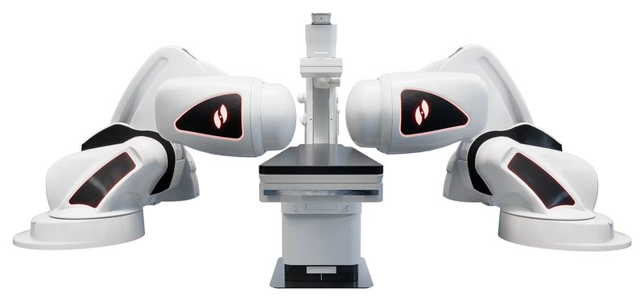

Commercial and clinical-stage systems · niobe_stereotaxis2003
Niobe / Genesis
Niobe / Genesis / GenesisX Robotic Magnetic Navigation

1 / 5


- Family
- Commercial and clinical-stage systems (magnetic-navigation)
- Devices
- magnetic-tip catheters and guidewires; Vdrive advancer
- Degrees of freedom
- 3 (li2024_design Table I)
- Push
- Magnetic
- Twist
- Field direction
- Tested up to
- Human
- Sim-to-real
- None found — No simulation-trained controller found for this robot.
Testing
- Highest level
- Human
- What was tested
- thousands of EP cases historically (N.R. exact in sources opened)
- Key numbers
- GenesisX 510(k) Nov 2025 (medtechdive/dicardiology via search, not opened)
Mechanism
- Push (translation)
- magnetic
- Twist (rotation)
- tip direction by external field (two permanent magnets, 0.08-0.12 T, mandhumula2025_robotic)
- Device range
- N.R.
- Target anatomy
- cardiac electrophysiology (ablation, AF); coronary/peripheral use reported historically
Sensing and interface
- Force sensing
- none in robot; contact-force catheters integrated
- Leader and haptics
- no
- Imaging
- fluoroscopy/mapping integrated (EP lab)
- Sterility
- disposable advancer parts (N.R. detail)
Size
- Footprint (mm)
- N.R.
- Mass (kg)
- N.R.
Simulation
- Simulation model
- none found
- Sim-trained controller
- none found
Versions
- Lineage
- Niobe ES (2003-); Genesis (FDA 2020 per ren2023_critical); GenesisX (FDA 510(k) 2025-11-10, limited launch)
Sources
- The Critical Technologies of Vascular Interventional Robotic Catheterization: A Review · IEEE Sensors Journal, 2023 · doi:10.1109/jsen.2023.3320356 [ren2023_critical]
- Robotic Systems Design in Endovascular Treatment · IEEE Transactions on Medical Robotics and Bionics, 2024 · doi:10.1109/tmrb.2024.3377374 [li2024_design]
- Robotic Systems in Cardiovascular Interventions: Evolving Platforms and the Path Forward · Methodist DeBakey Cardiovascular Journal, 2025 · doi:10.14797/mdcvj.1652 [mandhumula2025_robotic]
- Robotics in neurointerventional surgery: a systematic review of the literature · Journal of NeuroInterventional Surgery, 2021 · doi:10.1136/neurintsurg-2021-018096 [crinnion2022_robotics]
Notes
- Notes
- Stereotaxis bought Robocath 2026 (see rone row): now owns a mechanical-drive PCI robot plus magnetic EP robot.
This record
- Read level
- web
- Picture
- https://www.stereotaxis.com/wp-content/uploads/2024/09/Genesis-Product-Image-scaled.webp (page https://www.stereotaxis.com/products/) ↗ — licence: press image (Stereotaxis); grade B
- Picture changes
- cropped (1,42)-(2559,1239) of 2560x1280 RGBA, flattened on white; cut = publisher alpha
- Found by
- commercial: Search of commercial and clinical-stage systems.
- Data
- JSON · YAML:
records/robots/niobe_stereotaxis2003.yaml - Correction
- Suggest a correction [repository not created yet]